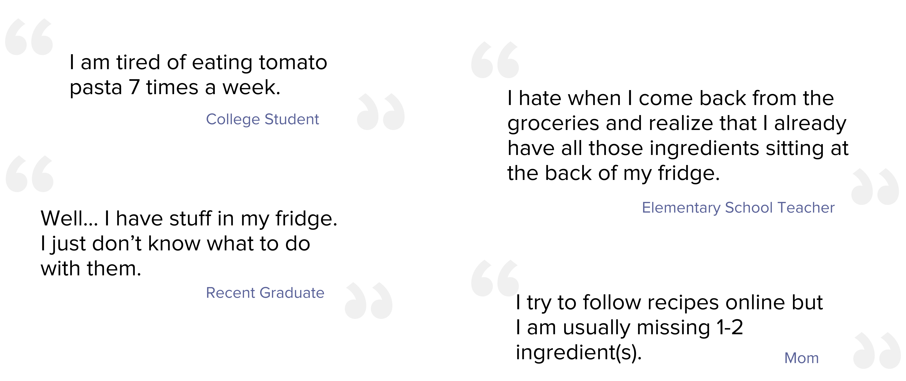

Fridger
Fridger
Mobile App UI/UX Design
Innovated and designed UI/UX for Fridger, an all-in-one fridge management app that reduces food waste and streamlines cooking routines.
Fridger
Mobile App UI/UX Design
Project type
Applicaiton UX Design
Personal Project
Deliverables
Figma Prototype
Skills
User Research
UX Design
User-Testing
Duration
Oct 13 2021 - Oct 27 2021

BACKGROUND
Prompt
Design 3 application prototypes in 3 weeks! To develop a rapid application development mindset, I practiced coming up with many ideas, designs, and prototypes in a short period of time. The challenge brief for this specific project was to help another person (not myself) solve a tiny problem.
Process
RESEARCH
Inspiration
Living in a residential college with a convenient access to cafeteria, I don't have to worry about cooking. During a conversation with a friend who cooks at home, I find out that cooking routine can be tiring and stressful. I decided to solve a problem for people who cook at home.
User Interview
Using feigning understanding, I interviewed potential clients; people who cook at home. Here are some of the useful takeaway from the User Interview.
Problem Assumption
Solution Opportunity
Fridger
A mobile application that helps users manage their fridge inventory, re-stock groceries, and suggest recipes with ingredients available at home.
Measureable Outcome
Design
Flowchart
App Icon & Splashscreen
Using Gestalt principles, I designed minimalistic icons & splashscreen that grab people's attention and emphasize its utility.
Interactive Prototype
Using Gestalt principles, I designed minimalistic icons & splashscreen that grab people's attention and emphasize its utility.
DESIGN
Flowchart
Living in a residential college with a convenient access to cafeteria, I don't have to worry about cooking. During a conversation with a friend who cooks at home, I find out that cooking routine can be tiring and stressful. I decided to solve a problem for people who cook at home.
User Interview
Using feigning understanding, I interviewed potential clients; people who cook at home. Here are some of the useful takeaway from the User Interview.
Problem Assumption
Solution Opportunity
Fridger
A mobile application that helps users manage their fridge inventory, re-stock groceries, and suggest recipes with ingredients available at home.
Measureable Outcome
Flowchart
Problem
"People don't know what is in the fridge and what to do with them"
Solution
Fridger, the ultimate mobile applicaiton that helps users manage their fridge inventory, re-stock groceries, and suggest recipes with ingredients available at home.

Fridger
Mobile App UI/UX Design
Innovated and designed UI/UX for Fridger, an all-in-one fridge management app that reduces food waste and streamlines cooking routines.


Stop throwing away food. Make a delicious meal using ingredients already available at home. Fridger helps you manage your fridge inventory, re-stock groceries, plan meals, and reduce food waste.
Scan to Start Virtual Fridge

Virtual Fridge
View the items in the fridge at your fintertips. Items are displayed in categories and can be customized by pressing Add category + . Color stickers indicate the freshness of the food; ● (good), ● (okay), and ● (Risky).


Manage Items
View, add, or edit items in the fridge by clicking + button. Track its freshness, quantity, and make notes. If the item is short in supply, click + Grocery List button to add your ingredient to the grocery list.
Manually Enter
Users can manually enter items not currently available on the list (eg: left-over food) through photos or logs.

Today's Dish
Get recipe recommendations with the items available in your fridge. An alert bar notifies you when your food is nearing expiration.
Recipe
Based on the entry and available ingredients, fridger recommends users with easy, nutirious, and delicious recipes. Add the dish to your favorites, or share with friends.

Cooking & Update
When finished with cooking, Fridger displays a notification that reminds users to update the virtual fridge. It displays the list of ingredients used for the recipe. Click all the ingredients they used, and update the fridge.
Grocery
Make a grocery shopping list. This will be connected to the third-party online grocery apps.

Favorites & Share
Bookmark recipes to your "favourites" and share with friends.